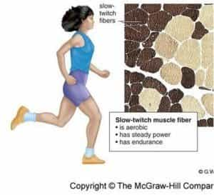
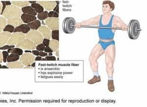
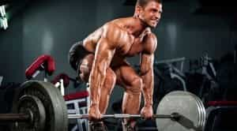

< < < Back
How To Train Your Body For Strength Versus Endurance – Return Of Kings
If you’re reading my articles, then you are likely either a fitness novice looking for a place to start, or an athlete seeking an edge in your athletic endeavors. If I’m going to be training you, I will now explicitly state what I have implied in several of my articles: truly effective training is a much deeper rabbit hole than just knowing what exercises to do and the proper form for said exercises.
A major tenet of training, I’ve found, is setting concrete, realistic goals for the “point” you are at currently at: if you’re just beginning to run, winning a marathon is not a realistic goal for at least the first year of training. In contrast, “increasing cardiovascular endurance” or “running a mile” is a very realistic and achievable goal. And once you have achieved one of your goals, you will be both physically capable of achieving the next one, and having the psychological confidence to do so.
And this concept of setting goals brings me to the title of the article—for increasing strength and increasing endurance are goals that are both achievable for beginners, but are mutually exclusive for elite level athletes.
Why Is This The Case?

This is because there are different types of skeletal muscle fibers that pertain to different kinds of physical exertion. Training for maximal strength will lead to you developing more of one kind than the other, and inversely training for endurance will lead to your muscles predominantly being composed of the other. More specifically, and greatly simplified, there are three types of skeletal muscle fibers, and they are as follows:
Red muscle, or slow oxidative, is a type of muscle fiber that slowly contracts. This type of muscle slowly produces lactic acid (the stuff that causes “the burn”, to tell you when you’re over-exerting yourself). You can observe “red muscle” by looking at a cooked chicken—this is the dark meat. It is found in the chicken’s legs for obvious reasons: the chicken spends most of its day walking around, thus needing that stamina. This is the type of muscle fiber that is found in endurance athletes such as marathoners.
Note that muscular endurance (i.e. your legs not getting tired in a marathon) corroborates directly with cardiovascular endurance. The heart utilizes a separate type of muscle tissue and as such will not be discussed here.

Fast Glycolytic, or “white muscle” is, as one might expect by contrasting the previous paragraph, a muscle fiber that quickly and powerfully contracts in a bout of maximal exertion. In accordance with its power, these muscles quickly and abundantly produce lactic acid, a hormone that acts in a positive feedback reaction, i.e. your body telling you to take it easy or you’ll tear something. This type of muscle is found in any athlete that needs a quick burst of power-sprinters, Olympic weightlifters, ring gymnasts, etc. To return to the chicken comparison, this is the white meat, predominantly found in the breast and wings, as the chicken cannot sustain flight, and has no need to—just a quick sprint to get away from predators.

And finally, fast oxidative, or intermediate fibers, contract rapidly and have a moderate rate of fatigue. They are red and aerobic, rather than anaerobic, and serve as something of a “jack of all trades” of muscle fibers. An amateur athlete that trains in both strength and endurance without seeking to excel in either will have an abundance of these.
How To Train For Each
Training in one way or another will cause your body to generate one of the types of skeletal muscle tissue, and you cannot have a maximal degree of all three. Have you ever see a marathoner step into the weight room and snatch 400 pounds over his head? Me neither.
Despite that, you would not say that any person with a high degree of any of the three kinds is “unfit.” It is impossible to be a world class athlete in all three, but it is quite possible to be above average in all three. To cite one example, an Olympic class men’s gymnast, who is obviously incredibly dexterous and has a high degree of endurance, is also capable of deadlifting twice his bodyweight. While that bodyweight is not particularly heavy, an objective viewer should still be impressed with a small man deadlifting 300 pounds or so.
Power
A regimen for raw muscular power would be one of high weights and low repetitions. It would also be almost entirely made of compound lifts. A sample regimen for this would be along the lines of (all lifts are a one rep max or one set of no more than 3 repetitions):
- Deadlift
- Squat
- Bench Press
- Overhead Press
- Weighted Pull-up (preferably with a chain belt rather than clencing a dumbbell between your thighs)
- Dragon flag, Roman Chair sit-up, or some other heavy abdominal exercise
This is a fairly standard strength routine. Note that this routine is simple and only has six exercises. If you have a million exercises in your routine, you’re doing it wrong. While there are more esoteric exercises that are very effective for strength training-such as high level work with gymnastics rings-these exercises are much simpler and more accessible for the average man, and will likely be your starting point.

Endurance
As one would expect in contrast, an endurance workout has high repetitions and lower weights. Also in contrast is the greater variety of ways that muscular endurance can be trained—you can quite easily take the routine cited in the Power section and make it an endurance routine by dropping 100 pounds from each lift and adding 5 sets of 5 to each. However, I dislike doing high repetitions of weights-there are some experts, notably Pavel Tsatsouline, who claim it has a higher risk of injury.
Instead I will use my own endurance routine, done on a separate day from the strength routine, as a sample:
- Two sets of one handed pushups, one for each hand, to the highest number I can do them with proper form
- Two sets of pistol squats, one for each leg, again to the highest number I can do them with proper form
-
Horse stance for the longest time I can go
- Floor-To-Stand bridges for repetitions (I try not to do as many of these as I do the other exercises, to avoid any spinal injury)
- Neck bridges for time
- V-Sits for time
- 2 sets of “Hand-And-A-Half” pull-ups, one for each hand, for as many repetitions as possible
- A set of handstand pushups for as many repetitions as I can

In addition to these, I also do extensive cardiovascular training as well, and there’s no reason you shouldn’t. Running, martial arts practice, and swimming help provide endurance, the latter two of which also train the muscles to have stamina under a different set of auspices as well.
Regardless of the specific exercises you choose for each goal, the theoretical knowledge I have provided, as well as the sample routines, should see you on your way
Read More: The Ultimate Guide To Building Muscle: Genetics And Training